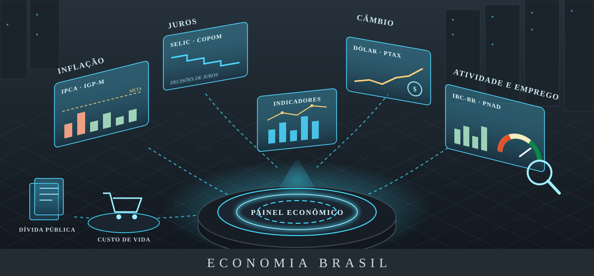

Em —, a inflação em 12 meses (IPCA) estava em —, —. A Selic está em — ao ano, a desocupação em — e o dólar fechou — a —.
| Início | Até | Meta |
|---|
| Mês | Selic efetiva | Variação |
|---|
Taxa básica de juros da economia, definida pelo Copom a cada cerca de 45 dias. A meta é o alvo decidido na reunião; a Selic efetiva é a média do mês nas operações com títulos públicos.
| Mês | No mês | 12 meses | Variação do 12 meses |
|---|
Índice oficial de inflação do país, medido pelo IBGE. A meta contínua do CMN é de 3% em 12 meses, com tolerância de 1,5 ponto para cima ou para baixo.
| Mês | No mês | 12 meses | Variação do 12 meses |
|---|
Índice Geral de Preços da FGV, muito usado no reajuste de aluguéis e contratos. Pesa bastante os preços no atacado e reage mais a câmbio e commodities. O acumulado em 12 meses é calculado no painel compondo as taxas mensais.
| Mês | Média do mês | Variação |
|---|
| Data | PTAX venda |
|---|
| Mês | Taxa | Variação |
|---|
Taxa de desocupação da PNAD Contínua (IBGE): parcela da força de trabalho sem emprego e procurando trabalho. Cada mês é a média do trimestre móvel que termina nele.
| Mês | Índice | Variação no mês | Variação em 12 meses |
|---|
Índice de Atividade Econômica do Banco Central, uma prévia mensal do PIB. A série tem ajuste sazonal, o que permite comparar um mês com o anterior.
| Mês | % do PIB | Variação |
|---|
Dívida bruta do governo geral (União, estados e municípios) como percentual do PIB, pela metodologia do Banco Central.
Fontes e notas
Dados do Sistema Gerenciador de Séries Temporais (SGS) do Banco Central. Clique no ícone de link para abrir os valores mais recentes de cada série direto na fonte.
- Meta Selic (decisões do Copom)série 432
- Selic efetiva no mês, anualizadasérie 4189
- IPCA no mêssérie 433
- IPCA acumulado em 12 mesessérie 13522
- IGP-M no mêssérie 189
- Dólar PTAX venda, diáriosérie 1
- Dólar PTAX venda, média mensalsérie 3698
- Taxa de desocupação (PNAD Contínua)série 24369
- IBC-Br com ajuste sazonalsérie 24364
- Dívida bruta do governo geral (% do PIB)série 13762
Ao abrir, o painel busca os dados mais recentes direto na API do Banco Central; se a busca falhar, usa a cópia salva em data/, renovada todo dia por uma rotina do GitHub. Os filtros de Ano e Mês valem para gráficos e tabelas (Ctrl + clique escolhe vários; o mês abre por trimestre); cartões e medidores mostram sempre o dado mais recente. Verde indica melhora e vermelho/salão indica piora; nas tabelas, alta de Selic e de dólar aparece em vermelho. As faixas dos medidores são referências para leitura rápida, não metas oficiais (exceto a do IPCA).